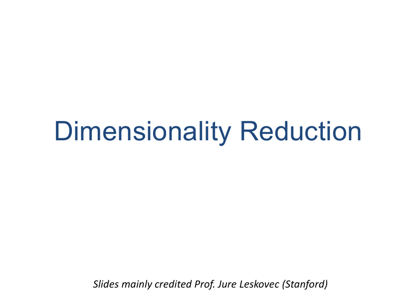
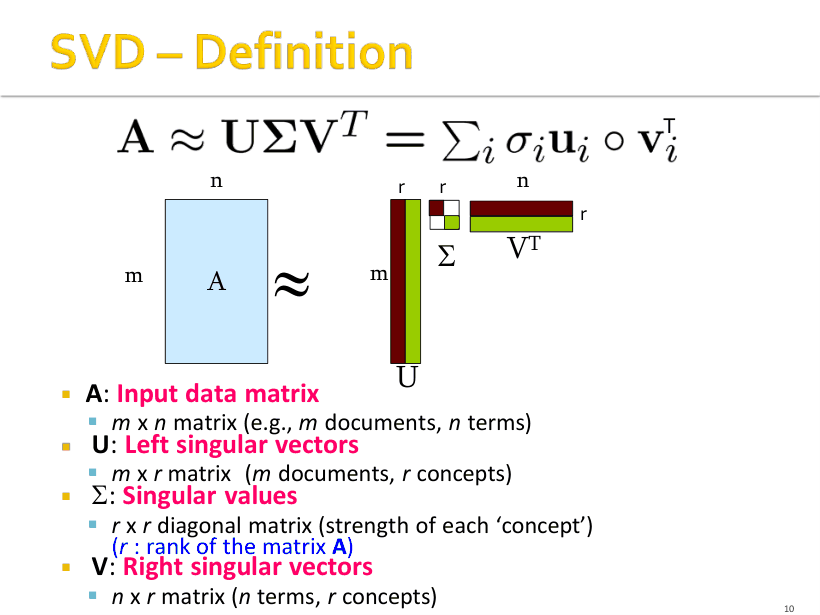
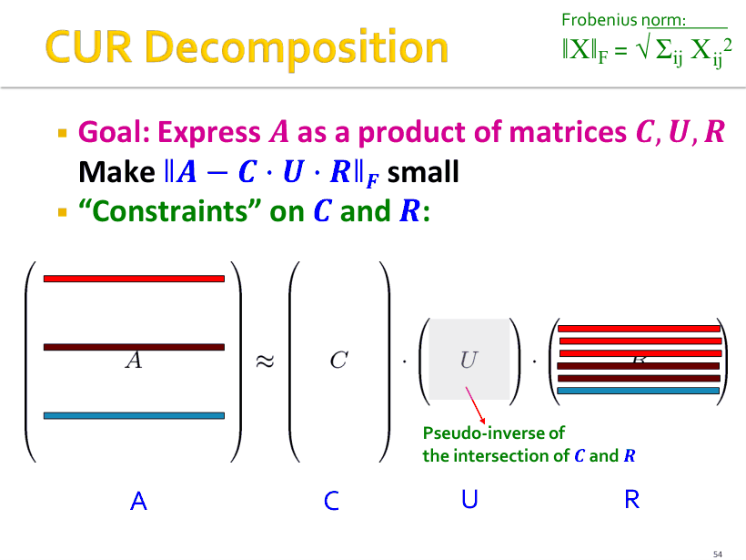

P1
降维：本讲标题页
考点
标题页：降维（dimensionality reduction），课件来自 Stanford 的 Machine Learning Basics。这是半期范围最后一章，要解决的问题是特征太多、矩阵太大怎么办。
🎯 半期压轴章：SVD 与秩-k 近似很可能出计算题。
半期最后一讲，压轴必考：A = U Σ Vᵀ 三个矩阵的含义、能量选 r、最优低秩近似、q·V 查询映射、幂迭代、CUR 采样概率。覆盖课件 p1–p62。
数据通常可以写成一个 m × n 矩阵 A（m 个对象、n 个特征，例如 m 个用户 × n 部电影）。这个矩阵往往可以被"共享一个很小的维度 r"的三个矩阵的乘积近似：A ≈ U Σ Vᵀ，其中 r ≪ min(m, n)。
为什么能这样：数据背后有隐藏的、潜在的因子（latent factors / latent dimensions），它们"在很近的程度上"解释了矩阵里的数值为什么是这样。用户-电影矩阵里，潜在因子就是"科幻偏好""爱情偏好"这类品位维度。
课件 p3 的例子最能说明问题：矩阵有 10⁶ 行、10³ 列，不允许更新、允许随机访问任何格子、可以有小误差。另有一个 7×5 的矩阵，所有行都只是 [1 1 1 0 0] 或 [0 0 0 1 1] 的缩放 ⇒ 它"实际上是 2 维的"，两个维度就够了。
rank(A) = A 的线性无关行的个数（也就等于线性无关列的个数，两者恒相等）。3 维空间里 A、B、C 三点，本来就是 3 个坐标；但可以换一组基（例如 [1 2 1] 与 [-2 -3 1]），用 2 个新坐标表示它们——维度就降了。
降维的目标因此可以这么说：发现数据的坐标轴。这些轴的选择方式（课件 p5）：第一维取点分布方差最大的方向；第二维取与第一维正交且方差次大的方向；一直取下去，直到剩下的维度方差很小、可以丢掉。
这就是 PCA 的几何表述。注意"正交"这一条：新轴必须互相正交，否则不是一组基。课外补充：沿方差最大的方向投影，被丢掉的方差最小，这是"降维误差最小"的等价说法，也是 SVD 最优性的几何来源。
任意实矩阵都能分解成 A = U Σ Vᵀ，三个矩阵的形式受到强约束，因此分解是唯一的（允许符号翻转）。
| 矩阵 | 尺寸 | 数学含义 | 用户-电影语境下的含义 |
|---|---|---|---|
| U | m × r | 左奇异向量（列） | user-to-concept：每个用户在各概念上的坐标 |
| Σ | r × r 对角 | 奇异值，非负、降序 | 每个概念的强度（strength） |
| Vᵀ | r × n | 右奇异向量（V 的转置，行） | concept-to-movie：每个概念在各电影上的权重 |
三条硬约束：① U、V 的列正交且单位长（column orthonormal），即 UᵀU = I、VᵀV = I；② Σ 是对角矩阵；③ 对角元（奇异值）非负且按降序排列 σ₁ ≥ σ₂ ≥ … ≥ 0。这里的 r 就是 rank(A)。
注意 UᵀU = I 并不等于 UUᵀ = I：只有当 r = m（U 是方阵）时才两者都成立。这是"正交矩阵"与"列正交"的区别，判断题常考。
n r r n
+------+ +-----+ +----+ +--------+
m | A |x| U |x| S |x| VT |
+------+ +-----+ +----+ +--------+
m x n m x r r x r r x n
A ~ U x S x VT , S = Sigma
r = #concepts , r << min(m,n)
把乘法展开，A 就是 r 个"秩 1 矩阵"按奇异值加权的和：
于是"降维"有了一个极其直白的操作：把最小的奇异值置为 0，对应的那一项 σᵢuᵢvᵢᵀ 整块被抹掉，矩阵就变瘦了。课件 p11 的原话：如果把 σ₂ 设为 0，那么"绿色的那几列就被擦掉了"。

7 个用户 × 5 部电影（Matrix / Alien / Serenity / Casablanca / Amelie）。前 4 个用户偏爱 SciFi（在 Matrix、Alien、Serenity 上打分），后 3 个偏爱 Romance（在 Casablanca、Amelie 上打分）。SVD 得到三个奇异值：
U 的每一行是一个用户在两个概念上的坐标：前 4 个用户的 SciFi 分量大（0.13 / 0.41 / 0.55 / 0.68 量级），后 3 个用户的 Romance 分量大且为负（−0.59 / −0.73 / −0.29）。负号不表示"不喜欢"，而是同一概念轴的方向约定——U 与 V 同时翻符号，乘积 A 不变。V 的每一行是一部电影在两个概念上的权重，例如 v₁ ≈ (0.56, 0.59, 0.56, 0.09, 0.09)，正是"三部 SciFi 电影在 SciFi 轴上权重大"。
考试常问"U 的第一列代表什么"——答：每个用户在 SciFi 概念上的坐标；"Σ 第一个元素代表什么"——答：SciFi 概念的强度。别答成"第一主成分的方差"（虽然数值上是它的平方根，见下）。
定义一组奇异值的 energy = 各自平方之和。选 r 使得保留的奇异值至少占总能量的 90%。用课件的例子算一遍（这是最可能的计算题）：
如果只保留 r = 1：153.76/245.7 ≈ 62.6%，不够 90%，所以要 r = 2。注意能量用平方，不要拿 12.4/23.2 去算比例。
做法只有一句话：把 Σ 里最小的一些奇异值置 0（等价于只留前 k 个 σᵢ，矩阵瘦身成 U_k Σ_k V_kᵀ）。得到 B 叫 rank-k 近似。k 越大越准：rank-1 近似已经很粗糙，rank-2 就能把这个 7×5 矩阵还原得相当好。
误差用 Frobenius 范数量化：
课件 p28 把 rank-2 重构出来的 B 与原矩阵对比：SciFi 区的元素几乎一致（如 1 → 0.92、3 → 2.91），Romance 区也基本还原（4 → 4.11、5 → 4.78），只有本来为 0 的位置出现了很小的非零值（0.01、0.03、−0.01）。这些"0 变成小正数"就是重构误差的来源——SVD 填上了它认为"应该有一点"的值。
定理（课件 p30 的表述）：设 A = U Σ Vᵀ，令 B = U S Vᵀ，其中 S 是对角矩阵、前 k 个对角元 sᵢ = σᵢ（i = 1…k）、其余为 0，则 B 是 A 的最优 rank-k 近似。"最优"的严格含义是：B 是 min_B ‖A − B‖_F（约束 rank(B) = k）的解。
换句话说：SVD 给出的轴就是"最小化重构误差之和"的轴，这与前面"取方差最大的方向"是同一件事的两面。答题时两个说法都要会：方差最大 == Frobenius 重构误差最小。
问题：找出喜欢《Matrix》的用户。做法：把查询向量 投影到概念空间——与每个概念向量 vᵢ 做内积。写成矩阵形式（q 是 1×n 的行向量）：
量纲检查（最容易错的地方）：q 是 1×n，V 是 n×r，乘出来 1×r ✓。写成 V q 维度就不合法；写成 q Vᵀ 会得到 1×n，"没降维"。
查询 q = (5, 0, 0, 0, 0)，即只在《Matrix》上打了 5 分（其余电影没评分）。用 V 的前两列（v₁ ≈ (0.56, 0.59, 0.56, 0.09, 0.09)，v₂ ≈ (0.12, −0.02, 0.12, −0.69, −0.69)）：
另一个用户 d = (0, 4, 5, 0, 0)，即在《Alien》打 4 分、《Serenity》打 5 分：
这是整讲最漂亮的一个结论：q 与 d 在原空间里没有任何一部电影是共同评过分的（q 只评 Matrix，d 只评 Alien、Serenity），但映射到概念空间后两者方向接近、相似度 > 0。降维在这里的作用不是"压缩存储"，而是发现"科幻爱好者"这个共同身份——这就是它在推荐系统里的用法。
对称矩阵：m_ij = m_ji。求它的主特征值（最大那个）与对应特征向量的迭代法：
课件 p37 的数值例：M = [[1,2],[2,3]]，x₀ = (1,1)。Mx₀ = (3,5)，‖Mx₀‖ = √34 ≈ 5.83 ⇒ x₁ ≈ (0.51, 0.86)。下一步 Mx₁ ≈ (2.23, 3.60)，‖·‖ = √17.93 ≈ 4.24 ⇒ x₂ ≈ (0.53, 0.85)。收敛值 ≈ (0.526, 0.851)，λ ≈ 4.25（精确值 2+√5 ≈ 4.236）。
课外补充：定理要求 M 对称、且主特征值的绝对值严格最大，否则迭代会来回振荡不收敛。课件只写"对称"，判收敛条件属于隐含前提。
求出 (λ, x) 后，把 M 中"能被这一对生成的部分"减掉，再对剩下的矩阵重复同样过程：
课件数值例：λ = 4.25，x ≈ (0.53, 0.85)。先算 xxᵀ（(0.53,0.85) 的外积），乘 4.25，从 M 减掉，得 M* ≈ [[−0.19, 0.09],[0.09, −0.07]]。课件印成 +0.07 是丢了一个负号：M 的迹是 1+3 = 4，而第二特征值必须是 4 − 4.25 = −0.25，−0.19 + (−0.07) ≈ −0.26 才对得上；若取 +0.07 迹就是 −0.12，矛盾。考试按 −0.07 写。
推导只需三行，考简答就写这三行：
对称地，AAᵀ 的特征分解给出 U（特征值同样是 σᵢ²）。所以完整算法：求 AᵀA 的特征对 → 得到 V 和 Σ → 再用 uᵢ = A vᵢ / σᵢ 得到 U（或直接对 AAᵀ 分解）。
计算代价：完整 SVD 是 O(nm²) 或 O(n²m)（取较小者）；如果只要奇异值、或只要前 k 个奇异向量、或矩阵稀疏，可以更省。实际都调用 LINPACK / Matlab 之类的库。
SVD 虽然是最优低秩近似，但有两个毛病：不可解释——每个奇异向量都是所有输入行/列的线性组合，你没法指着 u₁ 说"这是哪部电影"；不稀疏——即使 A 很稀疏，U 和 V 也是稠密的。CUR 的解法：只用 A 的真实行和真实列。
为什么交集：交集里的元素是 A 中幅值较大的格子（被"重要行列"同时覆盖），用它来标定缩放关系最稳。
为什么伪逆能当成逆来用：若 W 非奇异，W⁻¹ = (X Z Yᵀ)⁻¹ = Y Z⁻¹ Xᵀ；而 X、Y 正交 ⇒ X⁻¹ = Xᵀ、Y⁻¹ = Yᵀ；Z 对角 ⇒ Z⁻¹ 就是逐个取倒数。所以当 W 可逆时，伪逆就是真正的逆；W 不可逆（有零奇异值）时，把零奇异值置 0 而不是取倒数，这就是伪逆的定义。
A = C x U x R
m x n m x c c x r r x n
| |
+--- W ---+ W = C and R
U = W+

要降低期望误差，行/列不能均匀抽，必须非均匀抽。一行或一列的 importance = 它 Frobenius 范数的平方，也就是它所有元素平方之和。抽取概率必须正比于 importance。
课件的例子：行 [3,4,5] 的 importance = 9+16+25 = 50；行 [3,0,1] 的 importance = 9+0+1 = 10。所以前者被抽中的频率是后者的 50/10 = 5 倍。这是 CUR 最简单的一道计算题。
理论保证：取 c = r = O(k log k / ε²) 列/行（k 是想要的秩），则 ‖A − C U R‖_F ≤ (2 + ε)‖A − A_k‖_F 以 98% 的概率成立——即 CUR 的误差最多是 SVD 最优误差的 2+ε 倍。实践中取 4k 行/列就够了。
注意：这是随机算法，同一行/列可以被重复抽中。这是 CUR 的缺点之一（重复行/列）。
| SVD（A = U Σ Vᵀ） | CUR（A = C U R） | |
|---|---|---|
| 最优性 | Frobenius 范数下的最优 rank-k 近似 | 只有 2+ε 倍的近似保证（98% 概率） |
| 可解释性 | 差：奇异向量是所有行列的线性组合 | 好：基向量就是真实的列和行 |
| 稀疏性 | U、V 稠密（A 稀疏也没用） | C、R 保持稀疏 |
| 主要缺点 | 不可解释、稠密、慢 | 行列可能重复采样；结果随机 |
| 存储量 | U(m×k) 稠密 + Σ(k×k) + Vᵀ(k×n) 稠密 | C(m×c) 稀疏 + U(c×r) 小稠密 + R(r×n) 稀疏 |
直觉（课件 p58）：SVD 的维度是正交的，遇到"两团斜着放的云"会把轴放在两团中间；CUR 更可能抽到远离原点的真实行列，于是直接命中两团云（但会冗余）。DBLP 数据集（42.8 万作者 × 3659 会议，极度稀疏）的对比实验显示：CUR 的精度略低于 SVD，但空间占用和 CPU 时间都明显更优。
答案：总能量 = 12.4² + 9.5² + 1.3² = 153.76 + 90.25 + 1.69 = 245.7。
r = 1：153.76 / 245.7 ≈ 62.6%，不足 90%。
r = 2：(153.76 + 90.25) / 245.7 = 244.01 / 245.7 ≈ 99.3% ≥ 90% ⇒ r = 2。
顺带：丢弃 1.3 只损失总能量的 1.69/245.7 ≈ 0.7%，所以这个矩阵实质上只有 2 个概念。
答案：Mx₀ = (1×0.707 + 2×0.707, 2×0.707 + 3×0.707) = (2.12, 3.54)；若直接用未归一化的 x₀ = (1,1) 则 Mx₀ = (3,5)。
‖Mx₀‖ = √34 ≈ 5.83 ⇒ x₁ = (3,5)/5.83 ≈ (0.51, 0.86)，与课件一致。
继续迭代会收敛到 x ≈ (0.526, 0.851)，此时 λ = xᵀMx ≈ 4.25（精确值 2 + √5 ≈ 4.236）。注意 x 必须是单位向量，否则 λ = xᵀMx 不成立。
答案：AᵀA = [[2,2],[2,2]]，特征值为 4 和 0（迹 = 4，行列式 = 0）。
λ = 4 的特征向量 v₁ = (1,1)/√2；λ = 0 的 v₂ = (1,−1)/√2。所以 V = [[1/√2, 1/√2],[1/√2, −1/√2]]。
奇异值 σᵢ = √λᵢ ⇒ σ = (2, 0)，Σ 写 2×2 的 diag(2, 0)（rank(A) = 1，真正的 Σ 是 1×1 的 [2]）。
U：u₁ = A v₁ / σ₁ = (2/√2, 2/√2)/2 = (1/√2, 1/√2)；u₂ 取与 u₁ 正交的单位向量 (1,−1)/√2。
验证：σ₁u₁v₁ᵀ = 2 · [[1/2, 1/2],[1/2, 1/2]] = [[1,1],[1,1]] = A ✓（因为这是秩 1 矩阵，第二项系数为 0）。
答案：importance = 元素平方和：50、10、1；总和 61。
概率分别 50/61 ≈ 0.820、10/61 ≈ 0.164、1/61 ≈ 0.016。
第一行被抽中的频率是第二行的 50/10 = 5 倍，是第三行的 50 倍。这正是"重行被反复抽到"的来源，也是 CUR 会出现重复行的原因。
每格 = 课件原页截图 + 中文讲解；标 考点 的页容易出题或容易错。宽屏时图在左、讲解在右；点顶部「页面目录」可跳到任意页。